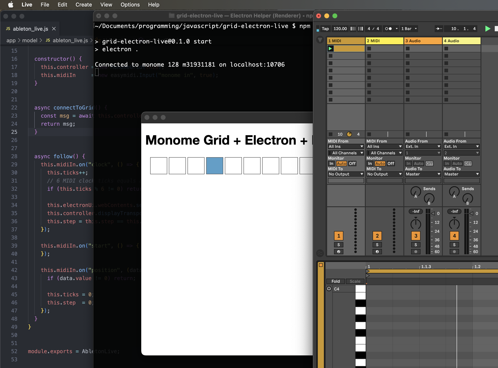

Tables & Waves
Step 4: Electron Sequencer UI
Step 4 of the Grid+Electron+Live Tutorial is be a big one. There are a lot of changes to a lot of files, but it represents a major milestone in wiring up the three core components, the grid hardware, the Electron app's UI and the clock signal from Live.
Background on the Electron Security Model
An Electron app has two core components, a Node.js app and the web browser-based UI. These components are separated for security reasons, the details of which are beyond the scope of this tutorial. See the Electron Process Model documentation for more details.
However, the important thing we need to know is that the security model forces us to send communication from the Node.js side of things to the UI in a very specific manner. In our sequencer app, we will be receiving MIDI clock data from Live in the Node.js Electron process. However, we will then want to display the clock data in step sequencer style in both the Electron UI and on the grid.
Implementing Step Sequencer Display for the grid and UI
In our app, the AbletonLive class receives clock data on a MIDI input port and is holding onto an instance of the MonomeGrid class as a data member (the controller variable). The AbletonLive class is also holding onto a reference to the Electron UI object as a data member (the electronUi variable). The AbletonLive class then needs to fire off messages to both the Electron UI and the grid hardware at the rate of every 16th note.
The grid interaction is relatively simple. The top row of grid buttons will serve as the transport row. For each 16th note while the Live transport is running, the corresponding grid button should light up. The transport should loop.
Due to the aforementioned security constraints in all Electron apps, the method for updating the sequencer UI in Electron is more complex. The AbletonLive class's electronUi variable, which is set in the main.js script when the app first loads, is an instance of an Electron BrowserWindow object. This object has a reference to the browser UI via its webContents variable. This webContents variable has a send() method by which named messages can be passed to the UI.
In this step of the tutorial, we configure a transport message that can be sent from the Node.js process to its UI in the preload.js script. Note that we have declared a stepSequencer object that can then be accessed in the UI's own JavaScript file (./app/view/js/ui.js). By virtue of the configuration in the preload.js script, this stepSequencer object is attached to the Electron UI's primary window object. The preload script then attaches named methods (transport in this example) to this stepSequencer object and data can be passed to the browser UI for acting upon. In this case, within the AbletonLive class's follow() method, it sends a transport message containing the current 16th note step that should be updated:
this.electronUi.webContents.send("transport", this.step % 16);Another important part of the Electron security model is that updates in the UI should use CSS rules as much as possible. This means that the UI display works by updating the state of HTML elements' class attributes. The CSS defines the active step as blue.
Once all the code files below have been updated, launch the Electron app (npm start) and start Live's transport. The grid hardware and the Electron UI should both display the current sequencer step.
Other Notes
In order for the displays on the grid and the UI to be in sync with Live's transport, you may need to Adjust the MIDI in timing in Live's preferences. If the 16th note represented by Live's transport line in a MIDI clip seems to be ahead of the steps displayed in the UI or on the grid, try adjusting the MIDI Clock Sync Delay by a negative number, such as -100ms.
The main.js class also watches for the Electron window close event. When it occurs, it calls a method that resets the grid display by turning off all button lights.
Since the Electron UI is a web browser, specifically an instance of Chromium, you have access to its developer tools. In order to utilize this development debugging resource, at this point in the tutorial, the BrowserWindow object width has been increased and the developer tools are opened on load:
win.webContents.openDevTools();This means that you now have an additional way to utilize JavaScript's console.log() for quick debugging. Up to this point, we have been calling console.log() from the Node.js process of the Electron app, such as when we log grid key presses in the MonomeGrid class or log the transport Bars, Beats and 16th notes in the AbletonLive class.
Now any console.log() statements that are called in the file ./app/view/js/ui.js will be logged in the Chromium developer tools console. This can be very helpful when debugging exactly what kind of data is being sent to the Electron UI process from the Electron Node.js process.

Code Updates for Step 4
./app/model/ableton_live.js
const easymidi = require("easymidi");
const MonomeGrid = require("./monome_grid");
class AbletonLive {
// this instance variable is set to an Electron BrowserWindow object and provides the communication channel
// for updating the UI
electronUi = undefined;
// this instance variable is set to a MonomeGrid object and provides the communication channel to the hardware
controller = undefined;
// For a sequencer with a 16th note pulse, 4 measures will be one "super measure" to enable a 64 step sequence
superMeasure = 4;
// 16n step count
step = 0;
constructor() {
this.controller = new MonomeGrid(this);
this.midiIn = new easymidi.Input("monome in", true);
}
async connectToGrid() {
const msg = await this.controller.connect();
return msg;
}
async follow() {
this.midiIn.on("clock", () => {
this.ticks++;
// 6 MIDI clock ticks equals a 16th note.
if (this.ticks % 6 != 0) return;
this.electronUi.webContents.send("transport", this.step % 16);
this.controller.displayTransport(this.step % 16);
this.step = this.step == this.superMeasure * 16 - 1 ? 0 : this.step + 1;
});
this.midiIn.on("start", () => {
});
this.midiIn.on("position", (data) => {
if (data.value != 0) return;
this.ticks = 0;
this.step = 0;
});
}
}
module.exports = AbletonLive;
./app/model/monome_grid.js
const fs = require("fs");
const path = require("path");
const yaml = require("js-yaml");
const serialosc = require("serialosc");
const CONFIG_DIRECTORY = path.resolve(__dirname, "../../config");
const blank16x1Row = [0, 0, 0, 0, 0, 0, 0, 0, 0, 0, 0, 0, 0, 0, 0, 0];
class MonomeGrid {
device = undefined;
daw = undefined;
constructor(abletonLive) {
this.daw = abletonLive;
}
/**
* This is fundamentally the same code as the monome website's grid studies.
*/
async connect() {
const config = yaml.load(
fs.readFileSync(
path.resolve(CONFIG_DIRECTORY, "grid.yml"),
"utf8"
)
);
return new Promise((resolve, reject) => {
let addEvent = config.serial + ":add";
serialosc.start({ startDevices: false });
serialosc.on(addEvent, (device) => {
if (this.device) return;
if (device.type != 'grid') return;
this.device = device;
this.device.on('initialized', () => this.device.on('key', (press) => this.keyPress(press)));
this.device.start();
resolve(`Connected to ${this.device.model} ${this.device.id} on ${this.device.deviceHost}:${this.device.devicePort}`);
});
});
}
keyPress(press) {
console.log(press);
}
clearGridDisplay(rowCount = 7) {
for (let y = 0; y < rowCount; y++) {
this.levelRow(0, y, blank16x1Row.slice(0, 8));
this.levelRow(8, y, blank16x1Row.slice(8, 16));
}
}
displayTransport(highlightIndex) {
let row = new Array(16).fill(0);
if (highlightIndex != undefined) row[highlightIndex] = 15;
this.levelRow(0, 0, row.slice(0, 8));
this.levelRow(8, 0, row.slice(8, 16));
}
levelRow(xOffset, y, row) {
this.device.levelRow(xOffset, y, row);
}
}
module.exports = MonomeGrid;
./app/view/css/styles.css
body {
font-family: "Helvetica Neue", Helvetica, sans-serif;
position: relative;
margin: 10px;
}
div.wrapper {
position: relative;
float: left;
}
div#sequencer-steps {
width: 800px;
margin: auto 10px;
}
div#sequencer-steps div {
width: 40px;
height: 40px;
margin: 2px;
background-color: #fff; /* dark gray: background color for inactive step */
border: 1px solid #333; /* medium gray: border color for active step */
}
div#sequencer-steps div.active {
background-color: #fff; /* medium gray: background color for active step */
border: 1px solid #555; /* medium-light gray: border color for active step */
}
div#sequencer-steps div.current {
background-color: #31a1ce; /* green: highlight background color for current transport step */
}
./app/view/index.html
<!DOCTYPE html>
<html>
<head>
<meta charset="UTF-8">
<!-- https://developer.mozilla.org/en-US/docs/Web/HTTP/CSP -->
<meta http-equiv="Content-Security-Policy" content="default-src 'self'; script-src 'self'">
<title>Monome Grid + Electron + Live</title>
<link rel="stylesheet" href="css/styles.css">
</head>
<body>
<h1>Monome Grid + Electron + Live</h1>
<div id="sequencer-steps" class="wrapper">
<div class="active wrapper step-0"><span></span></div>
<div class="active wrapper step-1"><span></span></div>
<div class="active wrapper step-2"><span></span></div>
<div class="active wrapper step-3"><span></span></div>
<div class="active wrapper step-4"><span></span></div>
<div class="active wrapper step-5"><span></span></div>
<div class="active wrapper step-6"><span></span></div>
<div class="active wrapper step-7"><span></span></div>
<div class="active wrapper step-8"><span></span></div>
<div class="active wrapper step-9"><span></span></div>
<div class="active wrapper step-10"><span></span></div>
<div class="active wrapper step-11"><span></span></div>
<div class="active wrapper step-12"><span></span></div>
<div class="active wrapper step-13"><span></span></div>
<div class="active wrapper step-14"><span></span></div>
<div class="active wrapper step-15"><span></span></div>
</div>
<script src="js/ui.js"></script>
</body>
</html>
./app/view/js/ui.js
let previousStep = 15;
window.stepSequencer.transport((event, currentStep) => updateTransport(currentStep));
const updateTransport = (currentStep) => {
document.querySelector(`#sequencer-steps .step-${previousStep}`).classList.remove("current");
document.querySelector(`#sequencer-steps .step-${currentStep}`).classList.add("current");
previousStep = currentStep;
}
./main.js
const { app, BrowserWindow } = require('electron');
const path = require('path');
const AbletonLive = require('./app/model/ableton_live');
const daw = new AbletonLive();
function createWindow () {
const win = new BrowserWindow({
width: 1500,
height: 600,
webPreferences: {
preload: path.join(__dirname, 'preload.js')
}
});
daw.electronUi = win;
win.loadFile('app/view/index.html');
win.webContents.openDevTools();
win.on("closed", () => {
daw.controller.clearGridDisplay(8);
});
}
app.whenReady().then(() => {
daw.connectToGrid().then((msg) => {
console.log(msg);
daw.follow();
});
}).then(() => {
createWindow();
app.on('activate', () => {
if (BrowserWindow.getAllWindows().length === 0) {
createWindow();
}
});
})
app.on('window-all-closed', () => {
if (process.platform !== 'darwin') {
app.quit();
}
});
./preload.js
const { contextBridge, ipcRenderer } = require("electron");
contextBridge.exposeInMainWorld("stepSequencer", {
transport: (callback) => ipcRenderer.on("transport", callback),
});